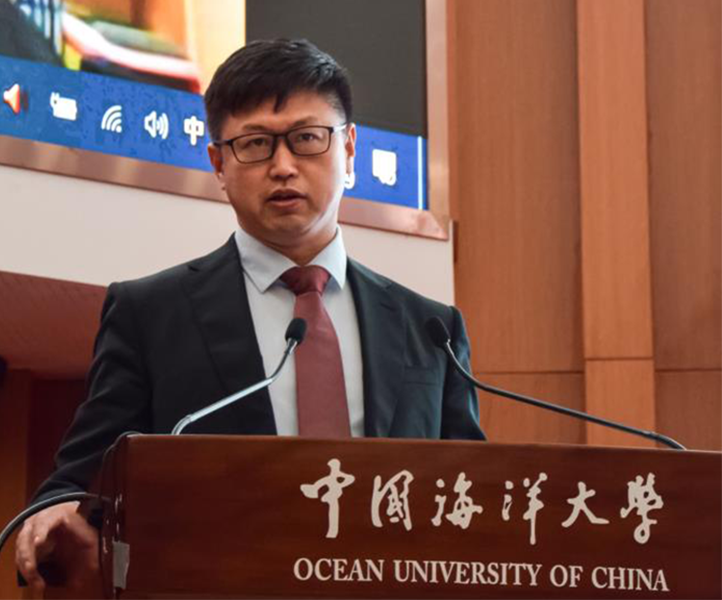

新闻动态
更多- 2025-05-28 《智能海洋技术与系统》第一届编委会第二次会议召开
- 2025-05-27 海大学生分会和爱特工作室代表参加YEF2025
- 2025-05-08 研究院2025届硕士学位论文答辩会圆满举行
- 2025-04-27 吴立新院士莅临信息科学与工程学部调研指导
- 2025-04-04 研究院在人工智能气象和海洋环境预报领域取得重要进展
- 2025-03-06 研究院在人工智能内容生成领域取得重要进展
- 2025-03-04 信息学部7篇论文被计算机视觉国际顶会CVPR 2025录用
- 2025-01-13 信息科学与工程学部召开2024年度工作总结暨表彰大会
- 2024-12-19 第21届CSIG青年科学家会议将在青岛举办
- 2024-12-19 董军宇教授在中国海洋大学学报学术年会做专题汇报
- 2024-12-14 学部13篇论文被人工智能顶会AAAI2025录用
- 2024-12-01 硕士生李汉哲在NeurIPS 2024发表论文
- 2024-09-29 一百周年校庆信息学部校友邀请函
- 2024-09-08 这是中国海洋大学信息科学与工程学部！
- 2024-09-04 伦敦国王学院罗山教授、华为公司牟雯萱博士访问实验室
- 2024-07-18 香港大学曹原教授访问实验室并做精彩报告
- 2024-07-02 “人工智能 +”走进海大课堂
- 2024-06-13 香港岭南大学副校长Sam Kwong教授做学术报告
- 2024-05-28 研究院师生参加第三届人工智能海洋学论坛
- 2024-04-18 阿德莱德大学Abelardo Pardo院长访问信息学部
学术推介
更多- 2025-05-30 “AI+X高校行Agent专题”活动来袭
- 2025-05-13 第二届全国信息地理学大会通知
- 2025-05-13 高光谱遥感信息处理与应用研讨会通知
- 2025-04-09 第二届人工智能与遥感科学交叉论坛
- 2025-04-05 第四届极地海洋与全球变化国际学术研讨会通知
- 2025-04-05 2025年山东省计算机教育大会通知
- 2025-03-15 2025年遥感青年科学家沙龙通知
- 2025-02-26 第九届全国积雪遥感学术研讨会
- 2025-02-12 CCIG 2025注册开启，5月长沙共襄图象图形盛会
- 2025-02-04 第四届人工智能海洋学论坛通知
- 2024-09-20 第六届“城市遥感”学术研讨会
- 2024-09-20 2024人工智能与遥感学术交叉研讨会(AIRS-2024)
- 2024-07-27 第二届“智能+气象海洋预报保障”论坛通知
- 2024-07-18 2024年海大“极地海洋与全球变化”研究生学术论坛
- 2024-07-08 第八届全国成像光谱对地观测学术研讨会通知
- 2024-07-02 第二届全国海洋岸大会暨智能海岸论坛
- 2024-07-02 第一届空天信息技术大会
- 2024-07-01 2024年遥感青年科学家沙龙
- 2024-06-30 后勤保障处2024年春季学期暑期服务工作安排
- 2024-06-30 7月3日英国莱彻斯特大学周挥宇教授报告通知

院长寄语：中国海洋大学人工智能研究院有信心建成世界一流的海洋人工智能学科，助力学校的“双一流”建设，为新时代人工智能发展作出贡献！真诚希望每位同学用智慧、勤劳和诚信的品格去谱写人生优美的乐章，我们将用热情、知识和力量...